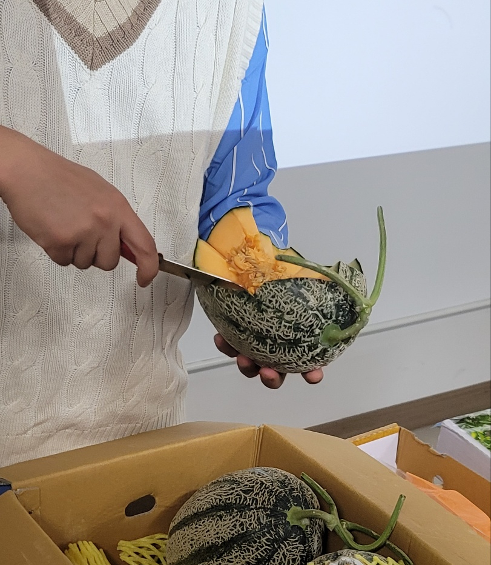
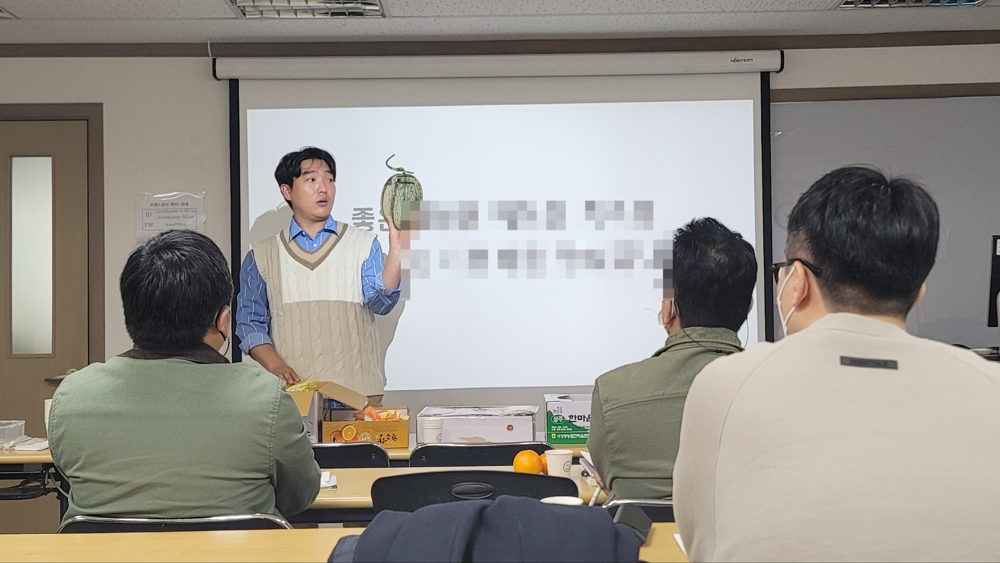
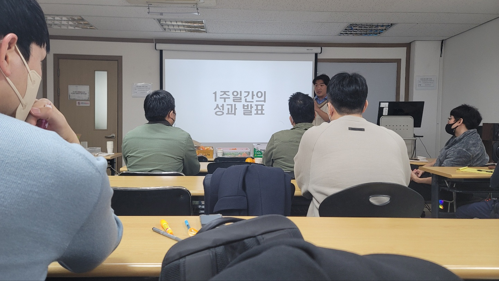

<!doctype html>
<html lang="ko">
<head>
  <meta charset="utf-8" />
  <meta name="viewport" content="width=device-width, initial-scale=1" />
  <title>?묓쉶 ?뚭컻 | ?€?쒓낵?쇳삊??/title>
  <meta name="description" content="?€?쒓낵?쇳삊?뚯쓽 誘몄뀡怨?鍮꾩쟾, 怨쇱씪 ?곗뾽 ?꾩옣 寃쏀뿕, 援먯쑁怨??곌뎄瑜??듯빐 ?щ엺怨?怨쇱씪?????섏? 留뚮궓??留뚮뱶???댁쑀瑜??뚭컻?⑸땲??" />
  <meta name="robots" content="index,follow,max-image-preview:large" />
  <link rel="canonical" href="https://koreafruit.kr/about.html" />
  <meta property="og:type" content="website" />
  <meta property="og:site_name" content="?€?쒓낵?쇳삊?? />
  <meta property="og:title" content="?묓쉶 ?뚭컻 | ?€?쒓낵?쇳삊?? />
  <meta property="og:description" content="?€?쒓낵?쇳삊?뚯쓽 誘몄뀡怨?鍮꾩쟾, 怨쇱씪 ?곗뾽 ?꾩옣 寃쏀뿕, 援먯쑁怨??곌뎄瑜??듯빐 ?щ엺怨?怨쇱씪?????섏? 留뚮궓??留뚮뱶???댁쑀瑜??뚭컻?⑸땲??" />
  <meta property="og:url" content="https://koreafruit.kr/about.html" />
  <meta property="og:image" content="https://koreafruit.kr/assets/site/market-01.jpg" />
  <meta name="twitter:card" content="summary_large_image" />

  <link rel="stylesheet" href="design-system.css?v=20260608b" />
</head>
<body>
  <div data-chrome="nav"></div>

  <main>
    <article class="letter letter--wide">
      <header class="letter__head">
        <span class="letter__edition">KFA Overview</span>
        <span class="letter__divider"></span>
        <span class="letter__topic">?묓쉶 ?뚭컻</span>
      </header>

      <h1 class="letter__title">
        ?€?쒓낵?쇳삊??
      </h1>

      <p class="letter__lede">
        怨쇱씪??媛€移섎? ?щ엺?먭쾶 ?곌껐?⑸땲??
      </p>

      <div class="letter__body">
        <p>
          怨쇱씪?€ 留ㅼ씪 ?앹궛?섏?留?留롮? 怨쇱씪???뚮퉬?먯? ?쒕?濡??곌껐?섏? 紐삵븯怨??덉뒿?덈떎.
        </p>
        <p>
          ?€?쒓낵?쇳삊?뚮뒗 ?앹궛?? ?먮ℓ?? ?뚮퉬?먮? ?곌껐?섎ʼn 怨쇱씪??媛€移섏? 寃쏀뿕???뺤옣?섍린 ?꾪빐 ?ㅻ┰?섏뿀?듬땲??
        </p>
        <p>
          ?곕━??援먯쑁, ?곌뎄, ?꾨Ц媛€ ?묒꽦, 臾명솕 ?뺤궛???듯빐 怨쇱씪 ?곗뾽???덈줈??湲곗???留뚮뱾?닿컩?덈떎.
        </p>
      </div>

      <section class="triangle">
        <p class="t-edition" style="margin: 0 0 28px;">??KFA 援ъ“</p>
        <div class="triangle__stack">
          <article class="triangle__node">
            <span class="triangle__label">湲곌?</span>
            <h3 class="triangle__title">?€?쒓낵?쇳삊??/h3>
            <p>怨쇱씪 ?곗뾽??湲곗????몄슦怨? 援먯쑁怨??곌뎄??諛⑺뼢??留뚮벊?덈떎.</p>
          </article>
          <article class="triangle__node is-primary">
            <span class="triangle__label">?꾨Ц媛€</span>
            <h3 class="triangle__title">怨쇱씪肄붾뵒?ㅼ씠??/h3>
            <p>?щ엺, ?곹솴, 紐⑹쟻??留욌뒗 怨쇱씪 寃쏀뿕???ㅺ퀎?섍퀬 ?꾩옣???곌껐?⑸땲??</p>
          </article>
          <article class="triangle__node">
            <span class="triangle__label">?꾧뎄</span>
            <h3 class="triangle__title">TSTC</h3>
            <p>?€?쒓낵?쇳삊?뚭? ?곌뎄쨌媛쒕컻??痍⑦뼢 遺꾩꽍 諛??곗씠???쒖뒪?쒖엯?덈떎.</p>
          </article>
        </div>
        <p class="triangle__caption">
          ?묓쉶媛€ 諛⑺뼢??留뚮뱾怨? 怨쇱씪肄붾뵒?ㅼ씠?곌? ?꾩옣???곌껐?섎ʼn,
          TSTC??洹??먮떒?????뺥솗?섍쾶 ?뺣뒗 <em>?듭떖 ?꾧뎄</em>?낅땲??
        </p>
      </section>
    </article>

    <section class="home-do about-mission">
      <div class="home-do__inner">
        <p class="t-edition" style="margin: 0 0 16px;">???곕━??誘몄뀡</p>
        <h2 class="home-do__h">?щ엺怨?怨쇱씪??媛€??醫뗭? 留뚮궓??留뚮뱺??</h2>
        <p class="home-do__lead">
          ?€?쒓낵?쇳삊?뚮뒗 援먯쑁, ?곌뎄, ?곌껐, 臾명솕 ?뺤궛???듯빐 怨쇱씪 ?곗뾽???덈줈??湲곗???援ъ텞?⑸땲??
        </p>
        <ul class="home-do__grid">
          <li>
            <h3>怨쇱씪 援먯쑁</h3>
            <p>?꾩옣怨??앺솢 ?몄뼱瑜??④퍡 ?ㅻ（??援먯쑁 ?꾨줈洹몃옩???댁쁺?⑸땲??</p>
          </li>
          <li>
            <h3>臾명솕 ?뺤궛</h3>
            <p>怨쇱씪???좊Ъ, ?앺긽, ?쇱긽 ?띿뿉???????뚮퉬?섎룄濡??덈줈??寃쏀뿕???쒖븞?⑸땲??</p>
          </li>
          <li>
            <h3>?꾨Ц媛€ ?묒꽦</h3>
            <p>怨쇱씪肄붾뵒?ㅼ씠?곕? ?듯빐 ?щ엺怨?怨쇱씪???곌껐?섎뒗 ?꾩옣 ?꾨Ц媛€瑜??ㅼ썎?덈떎.</p>
          </li>
          <li>
            <h3>?뚮퉬 ?쒖꽦??/h3>
            <p>?뚮퉬???곹솴怨?紐⑹쟻??留욌뒗 ?쒖븞?쇰줈 怨쇱씪 ?좏깮怨??ш뎄留ㅻ? ?뺤뒿?덈떎.</p>
          </li>
          <li>
            <h3>痍⑦뼢 ?곌뎄</h3>
            <p>TSTC瑜??듯빐 媛먭컖怨?痍⑦뼢 ?곗씠?곕? 異뺤쟻?섍퀬 ???섏? ?곌껐 湲곗???留뚮벊?덈떎.</p>
          </li>
        </ul>
      </div>
    </section>

    <section class="home-field">
      <div class="home-field__head">
        <p class="t-edition" style="margin: 0 0 16px;">??KFA媛€ ?섎뒗 ??/p>
        <h2 class="home-field__h">?꾩옣, 援먯쑁, ?곌뎄媛€ ?④퍡 ?€吏곸엯?덈떎.</h2>
        <p class="home-field__lead">
          媛€?쎌떆???ъ뼱, ?꾨ℓ?쒖옣 援먯쑁, 怨쇱씪 ?덊룊, ?ъ옣 ?ㅼ뒿, 媛뺤쓽 ?꾩옣怨??섏긽 湲곕줉源뚯?.
          ?€?쒓낵?쇳삊?뚮뒗 ?ㅼ젣 ?쒕룞?쇰줈 ?좊ː瑜?留뚮벊?덈떎.
        </p>
      </div>
      <div class="home-field__grid">
        <figure class="home-field__big">
          
        </figure>
        <figure>
          
        </figure>
        <figure>
          
        </figure>
        <figure>
          
        </figure>
        <figure>
          
        </figure>
      </div>
    </section>

    <section class="about-vision">
      <div class="about-vision__inner">
        <p class="t-edition" style="margin: 0 0 16px;">???곕━??鍮꾩쟾</p>
        <h2 class="about-vision__h">痍⑦뼢???뚯닔濡? ??퉬??以꾩뼱??땲??</h2>
        <p class="about-vision__lede">
          <strong>Know your taste, Zero waste</strong><br />
          ?щ엺??痍⑦뼢???댄빐?섎㈃ ??醫뗭? ?좏깮??媛€?ν빀?덈떎.
          ??醫뗭? ?좏깮?€ 怨쇱씪 ?먭린?€ ??퉬瑜?以꾩엯?덈떎.
          ?€?쒓낵?쇳삊?뚮뒗 怨쇱씪 ?뚮퉬???덈줈??湲곗???留뚮뱾?닿컩?덈떎.
        </p>
      </div>
    </section>

    <section class="about-map">
      <div class="about-map__inner">
        <p class="t-edition" style="margin: 0 0 18px;">???앺깭怨??ㅼ씠?닿렇??/p>
        <h2 class="about-map__title">吏꾨떒?€ ?곗씠?곌? ?섍퀬, ?곗씠?곕뒗 ??醫뗭? ?곌껐濡??댁뼱吏묐땲??</h2>
        <div class="ecosystem-flow" aria-label="?€?쒓낵?쇳삊???앺깭怨?援ъ“">
          <article>
            <span>KFA</span>
            <strong>?€?쒓낵?쇳삊??/strong>
            <p>援먯쑁怨??곌뎄??湲곗????몄슦怨??꾩옣 ?쒕룞???댁쁺?⑸땲??</p>
          </article>
          <b aria-hidden="true">??/b>
          <article>
            <span>TSTC</span>
            <strong>痍⑦뼢 吏꾨떒</strong>
            <p>留? ?? ?앷컧, ?됱쓣 ?앺솢 留λ씫怨??④퍡 湲곕줉?⑸땲??</p>
          </article>
          <b aria-hidden="true">??/b>
          <article>
            <span>Fruit DB</span>
            <strong>怨쇱씪 ?곗씠??/strong>
            <p>怨쇱씪蹂?媛먭컖 ?뺣낫?€ ?좏깮 ?곗씠?곕? 異뺤쟻?⑸땲??</p>
          </article>
          <b aria-hidden="true">??/b>
          <article>
            <span>Recommend</span>
            <strong>異붿쿇 ?쒖뒪??/strong>
            <p>?곹솴怨?紐⑹쟻??留욌뒗 怨쇱씪 ?꾨낫瑜?醫곹?以띾땲??</p>
          </article>
          <b aria-hidden="true">??/b>
          <article>
            <span>Fruit Director</span>
            <strong>?꾩옣 ?곌껐</strong>
            <p>怨쇱씪肄붾뵒?ㅼ씠?곌? 異붿쿇???ㅼ젣 寃쏀뿕?쇰줈 ?꾩꽦?⑸땲??</p>
          </article>
        </div>
        <p class="ecosystem-flow__note">
          ?ъ씠?몄뿉?쒕뒗 ?깅줉 ?먭꺽紐낆씤 <strong>怨쇱씪肄붾뵒?ㅼ씠??/strong>瑜?湲곕낯 ?쒓린濡??곌퀬,
          <strong>Fruit Director</strong>??異붿쿇 ?쒖뒪?쒓낵 ?꾩옣 ?곸슜源뚯? 梨낆엫吏€???뺤옣 ??븷濡??ㅻ챸?⑸땲??
        </p>
      </div>
    </section>

    <article class="letter letter--wide" style="padding-top: 0;">
      <div class="letter__next">
        <p class="letter__next-label">?ㅼ쓬 ?쎄린</p>
        <a href="coordinator.html">
          <span class="tag">02</span>
          怨쇱씪??媛€移섎? ?곌껐?섎뒗 ?щ엺.
        </a>
      </div>
    </article>
  </main>

  <div data-chrome="footer"></div>
  <script src="shared-design.js?v=20260608b"></script>
</body>
</html>

